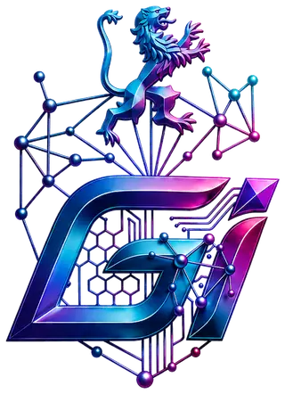

Ingeniería de clase mundial
Cuatro décadas dirigiendo infraestructura crítica en dos continentes: la solidez técnica que valida cada decisión de inversión.
Consultoría estratégica · Europa ↔ Latinoamérica
Fusionamos ingeniería de clase mundial, blindaje legal-tributario avanzado y automatización con IA. El respaldo multidisciplinario que la alta gerencia necesita para optimizar procesos, asegurar activos y acelerar su crecimiento entre Europa y Latinoamérica.

¿Por qué Galicia Invest?
Más de 40 años de ingeniería internacional, derecho tributario avanzado y reingeniería de procesos con IA convergen en un mismo equipo. Esa combinación resuelve cuellos de botella operativos que las consultoras tradicionales no pueden abordar.
Cuatro décadas dirigiendo infraestructura crítica en dos continentes: la solidez técnica que valida cada decisión de inversión.
Estructuras corporativas y planificación fiscal cross-border que protegen activos y dan certeza en múltiples jurisdicciones.
Reingeniería de procesos, dashboards gerenciales y automatización que convierten la operación en ventaja competitiva.
Tres disciplinas que por separado cualquier firma ofrece. Integradas en un mismo diagnóstico, resuelven lo que otras no alcanzan.
Soluciones
Diagnóstico operativo, reingeniería de procesos y despliegue práctico de IA para eliminar fricciones operativas.
Explorar02Estrategia tributaria internacional, estructuración de holdings y protección patrimonial e intelectual.
Explorar03Dirección de obras de gran envergadura y auditoría técnica de activos antes de invertir.
Explorar04Soft landing corporativo, alianzas estratégicas y matchmaking en cinco mercados.
ExplorarSoluciones en profundidad
Pilar 01 · Pilar central
Convertimos operaciones lentas en sistemas medibles, automatizados y escalables. Es el punto de partida natural de todo diagnóstico.
Agendar diagnóstico de este pilarDetección y eliminación de los cuellos de botella que frenan el crecimiento de la operación.
Dashboards automatizados en tiempo real para decisiones directivas basadas en evidencia.
Presencia digital de nivel corporativo, construida para convertir y escalar.
IA aplicada donde mueve la aguja: menos horas operativas, más capacidad de análisis.
Pilar 02
Blindaje corporativo y eficiencia fiscal para operar con certeza en múltiples jurisdicciones.
Agendar diagnóstico de este pilarPlanificación fiscal cross-border con certeza jurídica en cada jurisdicción.
Vehículos corporativos diseñados para proteger el patrimonio y ordenar el crecimiento.
Los intangibles valen tanto como los activos físicos: los registramos y defendemos.
Pilar 03
Más de 40 años de respaldo técnico en infraestructura crítica, al servicio de cada decisión de inversión.
Agendar diagnóstico de este pilarRespaldo técnico senior en proyectos residenciales, portuarios, viales e hídricos.
Saber exactamente qué se compra, antes de firmar.
Del análisis técnico-económico a la negociación con proveedores globales.
Pilar 04
Ingreso seguro a nuevos mercados, con redes locales que ya funcionan.
Agendar diagnóstico de este pilarIngreso seguro y ordenado a nuevos mercados regulados.
Matchmaking B2B corporativo con contrapartes validadas.
Cinco rutas activas, con redes locales operando en cada mercado.
Cómo trabajamos
Tu solicitud llega directo al equipo senior: analizamos el desafío y lo direccionamos al área —o las áreas— donde podemos aportar valor. Coordinamos contigo una reunión, presencial o virtual.
Según el servicio, ejecutamos una auditoría de problem solving que va al problema de fondo: identificar el cuello de botella real, no el aparente.
Plan de acción priorizado por impacto, con plazos, responsables e indicadores medibles.
Código, estructuras legales y dirección técnica ejecutados por el mismo equipo que diagnosticó.
Dashboards gerenciales en tiempo real y mejora perpetua de procesos con IA.
Nuestro ADN
Desbloquear el potencial de crecimiento de las empresas a través de la inteligencia operativa y la reingeniería basada en datos, estructurando inversiones estratégicas y soluciones legales cross-border que permitan expandirse sin fronteras.
Liderar la nueva era de la consultoría corporativa multidisciplinaria, donde la fusión de ingeniería de clase mundial y automatización avanzada con IA establezca el nuevo estándar de escalabilidad empresarial global.
No teorizamos sobre el papel: diseñamos e implementamos código, algoritmos y estructuras eficaces para eliminar cuellos de botella reales.
Rompemos barreras geográficas, técnicas y regulatorias para conectar capital, tecnología y territorio.
Adoptamos la vanguardia tecnológica y de IA para optimizar de manera perpetua nuestros procesos y los resultados de nuestros clientes.
Consultoría Legal & Tributaria
Precisión legal y mitigación de riesgos fiscales internacionales. Estructuras que protegen los activos corporativos en escenarios cross-border.
Consultoría Legal Corporativa
Protección de activos corporativos y derechos de propiedad intelectual adaptados a la era digital: marcas, patentes y tecnología.
Ingeniería Civil en Obras · Senior Partner
Más de 40 años de trayectoria internacional liderando infraestructura crítica: del desarrollo residencial a represas y puertos. Gestión de riesgos macro con solidez técnica incuestionable.
Ingeniería Comercial · Máster en Automatización
Perfil híbrido: economía y administración combinadas con desarrollo de aplicaciones, bases de datos y soluciones de IA. Comunicación ejecutiva multilingüe para negociaciones globales.
Hub Internacional
Dominio de las normativas locales, los ecosistemas comerciales y las redes de contacto B2B, unificado en un solo hub. Un equipo que conoce el terreno a ambos lados del Atlántico.
Contacto
Nos encargamos del diagnóstico técnico y legal. Tu equipo se encarga del crecimiento.